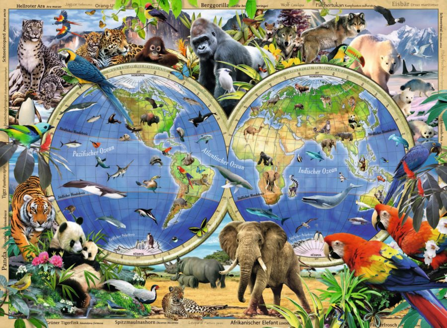
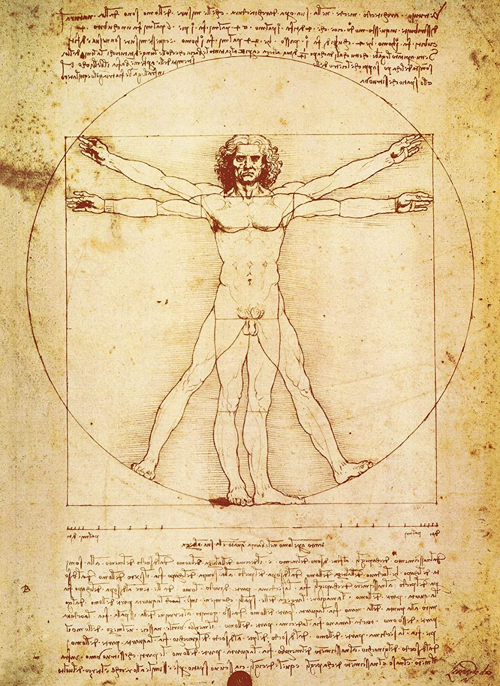

Disclaimer: The following webpage is created in one of the most popular earthly languages which is English. Beings from other planets or other solar systems are expected to have a slight knowledge of English
comprehension to further proceed with the webpage.
A planet's life forms inhabit ecosystems, whose total forms the biosphere. The biosphere is divided into a number of biomes, inhabited by broadly similar plants and animals. On land, biomes are separated primarily
by differences in latitude, height above sea level, and humidity. Terrestrial biomes lying within the Arctic or Antarctic Circles, at high altitudes or in extremely arid areas are relatively barren of plant and animal life;
species diversity reaches a peak in humid lowlands at equatorial latitudes. Estimates of the number of species on Earth today vary; most species have not been described.
A planet that can sustain life is termed habitable, even if life did not originate there. Earth provides liquid water—an environment where complex organic molecules can assemble and interact, and sufficient energy to
sustain metabolism. Plants can take up nutrients from the atmosphere, soils, and water. These nutrients are constantly recycled between different species. The distance of Earth from the Sun, as well as its orbital eccentricity,
rate of rotation, axial tilt, geological history, sustaining atmosphere, and magnetic field all contribute to the current climatic conditions at the surface.
Plants
Fig.1 - Pictures of home grown plants
Plants are mainly multicellular organisms, predominantly photosynthetic eukaryotes of the kingdom Plantae. Historically, plants were treated as one of two
kingdoms including all living things that were not animals, and all algae and fungi were treated as plants. However, all current definitions of Plantae exclude
the fungi and some algae, as well as the prokaryotes (the archaea and bacteria). By one definition, plants form the clade Viridiplantae (Latin name for "green plants"),
a group that includes the flowering plants, conifers and other gymnosperms, ferns and their allies, hornworts, liverworts, mosses, and the green algae, but excludes
the red and brown algae.
Animals

Fig.2 - Pictures of Animals
Animals (also called Metazoa) are multicellular eukaryotic organisms that form the biological kingdom Animalia. With few exceptions, animals consume organic material, breathe oxygen,
are able to move, can reproduce sexually, and grow from a hollow sphere of cells, the blastula, during embryonic development. Over 1.5 million living animal species have been described—of
which around 1 million are insects—but it has been estimated there are over 7 million animal species in total. Animals range in length from 8.5 micrometres (0.00033 in) to 33.6 metres (110 ft).
They have complex interactions with each other and their environments, forming intricate food webs. The kingdom Animalia includes humans. The scientific study of nonhuman animals is known as zoology.
Homo Sapiens

Fog3. - Vitruvian Man by Leonardo Da Vinci
Humans (Homo sapiens) are a species of highly intelligent primates. They are the only extant members of the subtribe Hominina and—together with chimpanzees, gorillas, and orangutans—are part of the family
Hominidae (the great apes, or hominids). Humans are terrestrial animals, characterized by their erect posture and bipedal locomotion; high manual dexterity and heavy tool use compared to other animals; open-ended
and complex language use compared to other animal communications; larger, more complex brains than other primates; and highly advanced and organized societies.